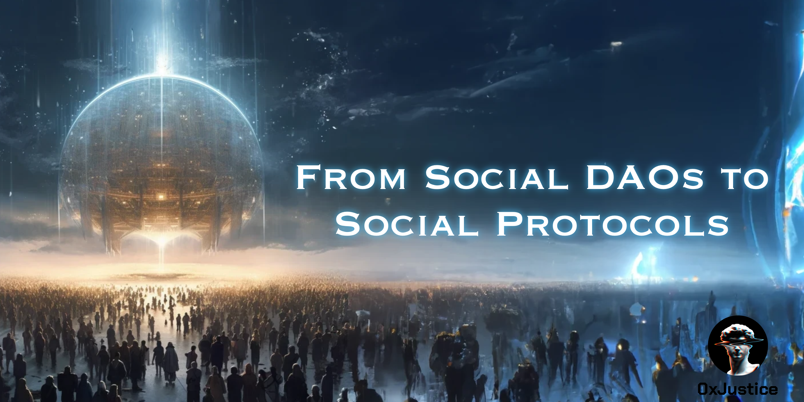
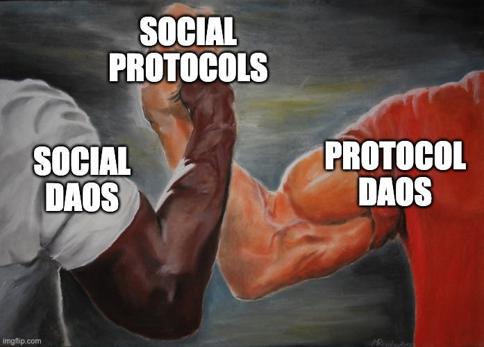
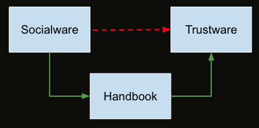
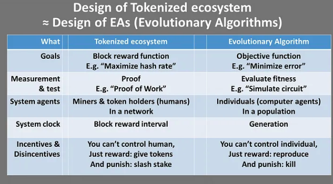
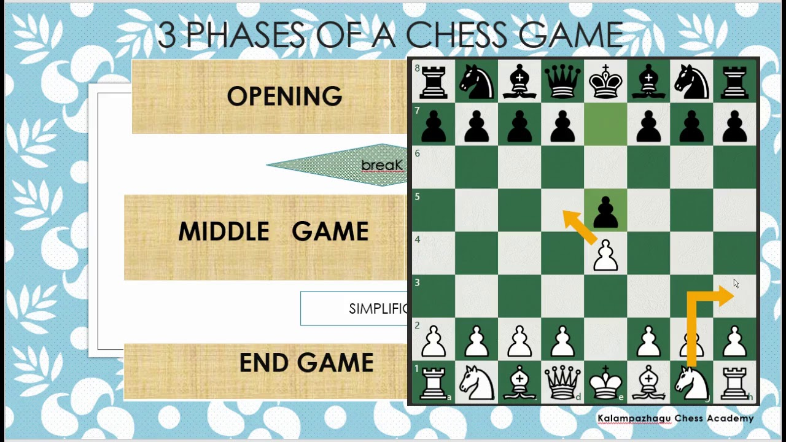
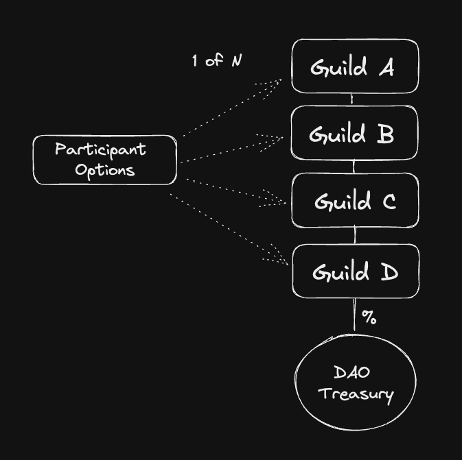
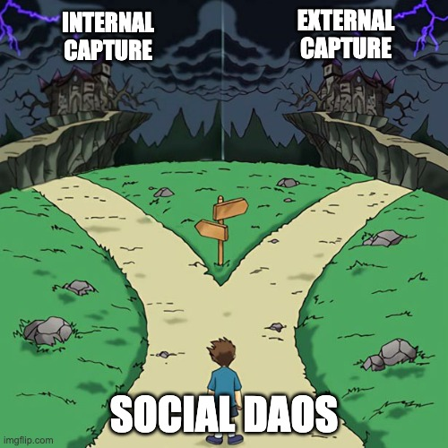

From Social DAOs to Social Protocols
Originally published at https://paragraph.com/@0xjustice/from-social-daos-to-social-protocols-2

In Protocol-first DAO Strategy, I argued that DAOs should build on value-generating protocols before cultivating broader community engagement. Specifically, I endorsed the advantages of framing DAOs as governance-minimized platforms. This advice may have sounded irrelevant to DAOs operating in non-protocol settings, but we may need to expand our imaginations.
Any systematic, repeatable process is amenable to protocolization. In this essay, I'll describe an approach for progressively transforming a Social DAO (aka tokenized community) into a Social Protocol and explain the many advantages of doing so.
Social DAOs
Pooling Vibes
You can categorize DAOs by what they pool. They can pool money for investing, collecting, or trading. They can also pool talent to create services. Social DAOs pool vibes. They encompass an open-ended selection of activities ranging from education, events, and content creation to running small grant programs. The focus is doing fun stuff with like-minded people. They epitomize the idea that the community itself is the product.
Tokenized Communities
A longer but more accurate term for Social DAOs is Tokenized Communities. I will use these terms interchangeably in this article. Few have thought deeper about this class of DAO than Jihad from Forefront. He has identified seven key traits that define them.
-
Tokenized: coordinates around a commonly held token on a blockchain.
-
Platformless: not inherently tied to any centralized platform or tool.
-
Self-managing: leadership is distributed amongst roles, not individuals.
-
Collectively governed: governed by all token-holders.
-
Meme-driven: working toward the proliferation of a common meme.
-
Positive-sum: economic model is expansive, not extractive.
-
Aspirational: actively working to progressively fulfill the first six criteria.
The typical structure of these communities usually revolves around roles, multi-signature wallets, and some kind of grants program. Groups propose desirable community experiences or system improvements, and the community votes on whether to fund them. Role holders act as a core community skeleton, maintaining operations. Let's compare this to the structure of a Protocol DAO.
Protocol DAOs
Defi
Most of us think of Defi when we hear Protocol DAO. These DAOs are responsible for governing a Defi protocol. That much is obvious. But what is a protocol in Web3? It's common to point to other internet protocols and regard them as nearly identical. This explanation should include a critical nuance. Web2 protocols facilitate communication, while Web3 protocols facilitate trade.
This nuance exists because blockchains created digital scarcity, enabling them to transact goods and internalize their economic model. Blockchains like Ethereum coordinate supply and demand, whether that be users and miners or borrowers and lenders in the case of Defi. We can structure any supply and demand system as a Web3 protocol when viewed like this.
Nouns
People love NounsDAO, and rightfully so. It's a continuous and nearly autopilot mechanism that grows DAO membership and treasury. It may be one of the best examples that we have of a protocol that's not Defi.
The continuous auction is a unique and tremendously underutilized mechanism DAOs can use in combination with other mechanics to create recurring protocol-like systems. I suspect that it's this specific property that captures people's imaginations. This observation should prompt us to ask what other activities we could similarly automate.
Social Protocols
If a Social DAOs community is the product, then we should be able to codify its structures and processes in such a way as to protect, improve, and grow it.
If the community's stated goal is to enhance the vibes while maintaining or increasing decentralization, protocolization is the way to do it. A ton of human interaction operates in unconscious scripts. This works to our advantage. The trick is to make it explicit and then frame it with incentives.

You could call this idea Social Protocol design. We're ultimately trying to design repeatable games that create desirable experiences and value for the system as a whole. We could also call these systems games, as this imagery helps to frame the process thematically. Consider the following 4-step approach to progressively transforming a community into a protocol.
Handbook
Every game has a handbook or manual. This document is even more critical for a Tokenized Community. How does the community work? What are the roles, responsibilities, and incentives? How does governance work? If no canonical source answers these questions and includes a process for changing things, you are flying blind.

Establish a baseline with a handbook or constitution. This process is the equivalent of moving your community operating system into source control. Your handbook is the source code of your Socialware. See Scaling Trust in DAOs: Trustware vs Socialware
An explicit natural language description is a precursor to a formal language (code) version. For inspiration, you can research other prominent DAO constitutions here: Constitutions of Web3.
Game Cycles
The next step in thinking through the design of your community experience is to define the cycle. This property is a fundamental trait of token engineering and evolutionary algorithms. By setting a game cycle along with the goals, agents, and incentives, you can capture learnings and make small changes to improve outcomes with every iteration.

Credit to Trent McConaghy
Luckily, many DAOs already think in terms of seasons. We can use seasons as the clock speed of the organization and begin to measure things like burn, retention, growth, community satisfaction, etc. The loop is the basis for evolutionary organizations and how the community optimizes desirable experiences. See: Towards a Practice of Token Engineering by Trent McConaghy
Game Phases
Next, we can take further inspiration from game design and divide each cycle into distinctive stages. Chess does this by delineating between opening-game, middle-game, and end-game strategies.

We could apply the same approach to a contributor's journey by delineating the three stages of onboarding, leveling, and project funding. You may identify more phases related to operations as well if you like. There's no magic bullet, and this can change with time. The point is to start somewhere and improve.
Componentize
The last step in this proposed transformation strategy is to codify the phases into self-sustaining mechanisms. By breaking down a system into components, each can function independently and be combined with others to create more complex systems. This approach allows for flexibility, simplification, and efficiency and enables us to use more diverse combinations of DAO tools.
The goal is to design discrete pieces and optimize what each aims to do such that each minigame feeds the successive stages, which, in turn, serves the macro game.
https://operator.mirror.xyz/Tye2rxnMC52aXo5rthrtKCqynSsfIigaqBawWZ1gyLU
This approach promotes innovation and reduces coordination overhead because people can develop modules independently and concurrently. They can experiment, optimize, and innovate within their specific module without affecting the overall system.
A Transformation Example
BanklessDAO (bDAO) is an excellent example of a social DAO, so I'll use it for this example. This selection also makes my remarks applicable to the many DAOs that have mirrored their structure.
bDAO stores its constitution on GitHub and updates it with governance-approved pull requests. It also operates in cycles called seasons, so we'll focus on game stages and how we could formalize them as components.
Onboarding
The first challenge we face is onboarding. Who does seasonal onboarding, and what is the incentive for those who oversee it? How do you maintain its quality? We could adopt standard employment tactics here such that the onboarding work gets evaluated by another group, but this pushes back the same questions to this new group of evaluators.
The best evaluator of a good or service is the entity paying for it. They have the greatest incentive to inspect, and their opinion is ultimately the only one that matters. With this principle in hand, we could create a commission system.

The stated function of Guilds in bDAO is onboarding and education. By enabling Guilds to sell season passes with a built-in split, we create incentive alignment, competition among the Guilds, and a measurable minigame that feeds the next stage.
Leveling
We could designate educational leveling as the middle game of bDAO. This context is the perfect opportunity to introduce reputation. People tend to over-complicate this topic. For this example, we'll consider reputation simple as nontransferable history and explicitly scope it to learning and teaching in the DAO.
We can create a learning game whereby new members purchase classes and build a reputation that grants them greater governance rights. You can see a more detailed diagram of this education game in my Games Over Governance article here. By doing it this way, we attach practical utility to reputation and raise money for the final stage of the game cycle.
Funding
In this example, the final game uses the money raised in the previous stages to fund new projects or products proposed by the season cohort. We can be clever here as well by combining several mechanisms. By leveraging a Joke race or a quadratic matching pool, we can create a competition that leverages the signal of people's preferences while amplifying the size of the matching pool.
From the outset, we have built financial sustainability and purposefully amplified competition in all three minigames. Each stage feeds the next and is independently tweakable with each cycle.
Conclusion
Tokenized Communities can't take the freedom they have enjoyed until now for granted. They neglect protocolization at their peril. They are rife for abuses and capture more than any other DAO type. They'll either be attacked from within through entrenched power dynamics or from without via regulatory threats.

The optimum defense is to preemptively and progressively move ossified elements of the DAO on-chain as Social Protocols. The ultimate advantages of this approach are scale, efficiency, and capture resistance. This line of thinking is the primary value proposition of building on-chain.
I'm in Web3 because I'm bullish on trustless coordination systems. Social Protocol design is an approach that pursues that while expanding our imagination of what a protocol can be. To remain stagnant and not evolve as a community is both irresponsible and the antithesis of the futurist visions we promote.
Big thanks to Elco and The DAOist for allowing me to present on this topic in Paris. See the deck of that presentation below.
[
Social Protocols
From Social DAOs to Social Protocols By 0xJustice, Polygon Labs - Thank you Elco and the DAOist - Thank you Polygon for supporting me to do this full time.
http://docs.google.com
](https://docs.google.com/presentation/d/e/2PACX-1vQ--a8suO4ovSgZQ2tg7eJIx9fGiDoHRP_xrxpAjFAofFzrE4-pduTLMuZKAWU5fmrDdfYONI24aMBY/pub?start=false&loop=false&delayms=3000)
Originally published on 0xJustice.eth